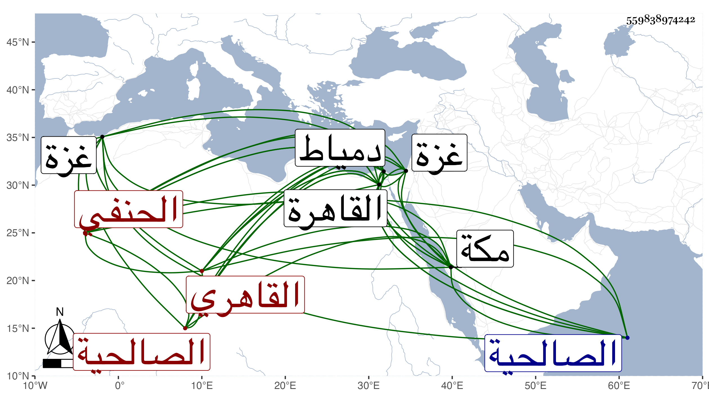

0902Sakhawi.DawLamic.ITO20230111-ara1.EIS1600.559838974242
Biography ID: 559838974242
1004
محمد بن أحمد بن حسن بن إسماعيل بن يعقوب بن إسماعيل الشمس بن الشهاب الكجكاوي العينتابي الأصل القاهري الحنفي شقيق محمود الآتي ، أمهما فردوس ابنة الشمس محمد بن سليمان بن موسى ويعرف بالأمشاطي نسبة لجده أبي أمه لكونه هو الذي رباه لموت والده وابنه صغير وكان الجد يتجر فيها وكان خيرا . ولد كما قرأته بخطه في سادس عشري ذي الحجة أو القعدة سنة إحدى عشرة وثمانمائة مقابل صهريج منجك بالقاهرة وقرأ القرآن وجود بعضه على حبيب العجمي وحفظ القدوري وبعض المجمع وغيرهما وقرأ تصحيحا على قارئ الهداية بل حضر دروسه ودروس التفهني وابن الفنري وتفقه بالشمس بن الجندي وعبد اللطيف الكرماني وابن الديري والأمين الأقصرائي وأذنا له في التدريس والإفتاء وعليهما قرأ في الأصول وكذا على الكرماني وعن ثانيهما وابن الجندي وكذا الشمني والراعي أخذ العربية وانتفع بابن الديري وناب عنه في القضاء وكان كثير التبجيل له وحاول وسائط السوء تغيير خاطره عليه لكونه لا ينجر معهم فيما يخوضون فيه فأبى الله إلا تقديمه عليهم بحيث صار في قضاء مذهبه كالشامة وكذا انتفع بملازمة الأمين وأخذ عن ابن الهمام وكان أيضا يجله حتى أنه لما عين له تصوفا بالأشرفية وقرر جوهر فيه غيره غضب وكان ذلك هو السبب في خلع الكمالي نفسه من الوظيفة واسترضوه بكل طريق فما أذعن ، وسمع على الولي العراقي فيما يغلب على ظنه والشموس بن الجزري والشامي وابن المصري والشهاب الواسطي والزين الزركشي وابن ناظر الصاحبة وابن بردس وابن الطحان والمحب بن يحيى والشرابيشي وشيخنا وابن أبي التائب والمحبين ابن الإمام والقمني وعلي بن محمد بن يوسف بن القيم وعائشة وفاطمة الحنبليتين وسارة ابنة ابن جماعة وأخيها الجمال عبد الله في آخرين ، بل رأيت له حضورا في الثالثة مع والده على الشرف بن الكويك لبعض الجزء الأول من مسند أبي حنيفة للحارثي بقراءة الكلوتاتي ولذا لا أستبعد أن يكون عنده أقدم من هؤلاء ، وأجاز له غير واحد ترجمت له أكثرهم في مجلد ، ودرس للحنفية بالفخرية ويدرس بكلمش وبالفيروزية مع مشيخة الصوفية بها وبالمنكوتمرية والباسطية وبالمسجد المعروف بإنشاء الظاهر جقمق بخان الخليلي وبمدرسة سودون من زاده وناب في مشيخة التصوف بالأشرفية وتدريسها في غيبة ابن شيخه الأقصرائي وكذا في تدريس الصرغتمشية فقها وحديثا في غيبة أبيه وهو من جملة معيديها ، وحج مرارا وجاور في بعضها أشهرا . وسافر دمياط وغزة وغيرهما وأقرأ الطلبة وحلق بل أفتى بإلزام شيخه الأمين له بذلك وربما كتب الأمير تحت خطه وعرف بالثقة والأمانة والديانة والنصح وبذل الهمة والقيام مع من يقصده وتأييد طلبة العلم في الأماكن التي ربما يحصل لهم فيها امتهان والتواضع مع من يحبه وحمل الأذى والتقلل من الدنيا مع التعفف وشرف النفس والتصميم في الحق وعدم المحاباة وترك قبول الهدية فاشتهر ذكره وقبلت شفاعاته وأوامره خصوصا عند كل من يتردد إليه من الأمراء كبيرهم وصغيرهم وباشر العقد لغير واحد من الأعيان ومنهم فيما بلغني الظاهر جقمق رغبة منهم في ديانته وثقته مع حرص بعض مستنيبيه على مباشرة بعضها وسعيه في ذلك ولا يجاب وما انفك مع هذا كله عن مناوئ وهو لا يزداد مع ذلك إلا عزا ، ولما مات شيخه سعد الدين تعفف عن الدخول في القضايا إلا في النادر ثم ترك أصلا كل ذلك مع الفهم الجيد وحسن التصور وذوق العلم والإتقان فيما يبديه والمشاركة في فنون والرغبة في إخفاء كثير من أعماله الصالحة ، وقد جود الخط على الزين بن الصائغ وكتب به كثيرا لنفسه ولغيره من كتب العلم وغيرها وانتقى وأفاد وكذا كتب بخطه ماربعة ومصحف ووقف بعضها قصدا للثواب بل أهدى لكل من الأشرف قايتباي وجانبك الدوادار ويشبك الدوادار وغيرهم ربعة وامتنع من قبول ما يثيبونه في مقابل ذلك وهو شيء كثير ، وكتب فيما أخبرني به ربع القرآن وضبطه في ليلة لاضطراره لذلك في الارتفاق بثمنه في ملاقاة شيخه ابن الجندي حين حج ، وبالجملة فهو حسنة من حسنات الدهر وقد صحبته قديما فما أعلم منه إلا الخير وأشهد منه من مزيد الحب ما لا أنهض لبثه ، وسمع مني بالقاهرة ومكة جملة وعين للقضاء غير مرة بإشارة شيخه الأمين وغيره وهو لا يذعن حتى كانت كائنة شقراء ابنة الناصر فرج بن برقوق وانحراف السلطان على المحب بن الشحنة بسبب قيام ابنه الصغير في التعصب معها وغير ذلك حسبما شرحته في الحوادث صرح بعزل القاضي وأخذ بيده فأقامه من مجلسه ثم ولى صاحب الترجمة إلزاما وذلك في يوم الخميس حادي عشر جمادى الأولى سنة سبع وسبعين من غير سبق علم له بذلك فيما قيل مع استدعاء السلطان له أمس تاريخه وتكلم معه في الكائنة وغيرها وركب ومعه المالكي والحنبلي في جمع من نواب كل منهم حتى وصل الصالحية على العادة وهي محل سكنه وهرع الناس للسلام عليه واستقر بالشريف جلال الدين الجرواني نقيب شيخه في النقابة . ورام التخفيف من النواب والاقتصار على من يكون منهم أشبه فلم يتم لكن مع التأكيد على جماعة منهم ثم باشر على طريقته في التصميم وما تمكن من منع الاستبدالات بعد معالجة ومراجعة كما بينته في تراجم القضاة وغيرها ولكن مع احتياط وضبط بالنسبة ، ثم قرره السلطان في مشيخة البرقوقية ونظرها بعد موت العضدي الصيرامي وأعرض حينئذ عن كثير من وظائفه الصغار لجماعة من الفضلاء والمستحقين مجانا لارتقائه عن مباشرتها بل رام فيما بلغني إعطاؤه الشيخونية فما وافق كما أنه لم يوافق على المؤيدية قبل ، واستمر في القضاة وهو يكابد ويناهد ويدافع ويمانع ويخاصم ويسالم ويتعصب ويغضب ويقوم ويقعد ويشدد ويتودد ويملك ما يمدح به أو يذم أو يغضب صديقه أو يطم كقيامه مع البقاعي في حادثة ليس في الإمكان أبدع مما كان وعدم التفاته في الخوض في جانبه بما يقاربها وكاد أمره أن ينحط عند الملك فلطف الله به . ومات في عزه ووجاهته في ليلة الاثنين خامس عشري رمضان سنة خمس وثمانين بعد عتق بعض ما في ملكه وصلي عليه من الغد برحبة مصلى باب النصر في مشهد متوسط ثم دفن على قارعة الطريق بين تربة قجماس أمير آخور والأشرف إينال وقال البدري بن الغرس : ساءت وفاته كل عدل أو نحو هذا ، وقال الولوي الأسيوطي : إن ذممنا فيه خصلة أو خصلتين حمدنا منه كثيرا رحمه الله وإيانا وأرضى عنه أخصامه فلم يخلف بعده مثله .
